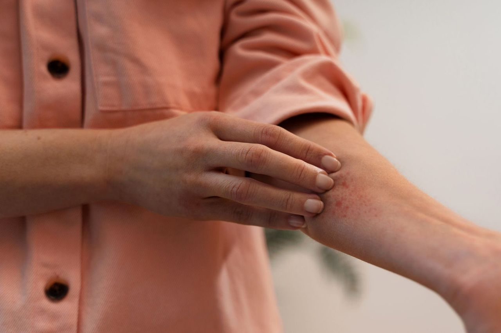

A alergia de contato é uma condição cutânea comum que afeta pessoas de todas as idades. Essa reação alérgica ocorre quando a pele entra em contato com substâncias irritantes ou alergênicas, desencadeando uma resposta inflamatória. Neste artigo, exploraremos o que é a alergia de contato e como é possível tratá-la de maneira eficaz.
O que é Alergia de Contato?
A alergia de contato é uma reação alérgica que ocorre quando a pele entra em contato com substâncias que desencadeiam uma resposta imunológica localizada. Essas substâncias, conhecidas como alérgenos, podem variar amplamente e incluir produtos químicos, metais, plantas, cosméticos e até mesmo medicamentos tópicos. Quando a pele entra em contato com um alérgeno, o sistema imunológico pode reagir exageradamente, resultando em sintomas desconfortáveis.
Sintomas Comuns
Os sintomas da alergia de contato geralmente incluem:
1. Coceira intensa: Uma sensação de coceira extrema na área afetada.
2. Vermelhidão: A pele pode ficar vermelha e inflamada.
3. Inchaço: O local pode ficar inchado devido à inflamação.
4. Bolhas: Em alguns casos, podem se formar pequenas bolhas.
5. Descamação: A pele afetada pode começar a descamar.
Os sintomas podem variar em gravidade, dependendo do alérgeno e da sensibilidade individual. Algumas pessoas podem desenvolver reações graves, enquanto outras experimentam apenas desconforto leve.
Diagnóstico
O diagnóstico da alergia de contato geralmente é realizado por um dermatologista. O médico examinará a área afetada da pele e, se necessário, realizará testes de alergia cutânea para identificar o alérgeno específico responsável pela reação.
Tratamento da Alergia de Contato
O tratamento da alergia de contato visa aliviar os sintomas e evitar futuras exposições aos alérgenos. Aqui estão algumas medidas que podem ser tomadas:
1. Evitar o Alérgeno: A maneira mais eficaz de evitar reações alérgicas é identificar e evitar o alérgeno responsável. Isso pode exigir mudanças no estilo de vida e no ambiente.
2. Medicamentos Tópicos: O uso de pomadas ou cremes contendo corticosteroides pode ajudar a reduzir a inflamação e a coceira.
3. Anti-histamínicos: Medicamentos orais, como anti-histamínicos, podem ser prescritos para aliviar a coceira e a inflamação.
4. Compressas Frias: Aplicar compressas frias na área afetada pode proporcionar alívio temporário.
Prevenção
A prevenção desempenha um papel crucial no manejo da alergia de contato. Algumas medidas preventivas incluem:
• Evitar contato com substâncias conhecidas por causar alergias.
• Usar luvas ou roupas protetoras quando estiver em contato com alérgenos.
• Ler os rótulos de produtos de beleza e cuidados com a pele para evitar ingredientes alergênicos.
• Consultar um dermatologista se você suspeitar de uma alergia de contato.
Conclusão
A alergia de contato é uma condição cutânea comum, mas muitas vezes desconfortável. A identificação dos alérgenos desencadeantes e a adoção de medidas preventivas são essenciais para o manejo eficaz dessa condição. Com o tratamento adequado e a prevenção, é possível aliviar os sintomas da alergia de contato e melhorar a qualidade de vida.
Se você suspeitar de uma alergia de contato ou estiver enfrentando sintomas, é importante consultar um dermatologista para avaliação e orientação específica sobre o tratamento.
Espero que este artigo tenha sido informativo e útil. Se você tiver alguma dúvida adicional ou precisar de mais informações, não hesite em perguntar.